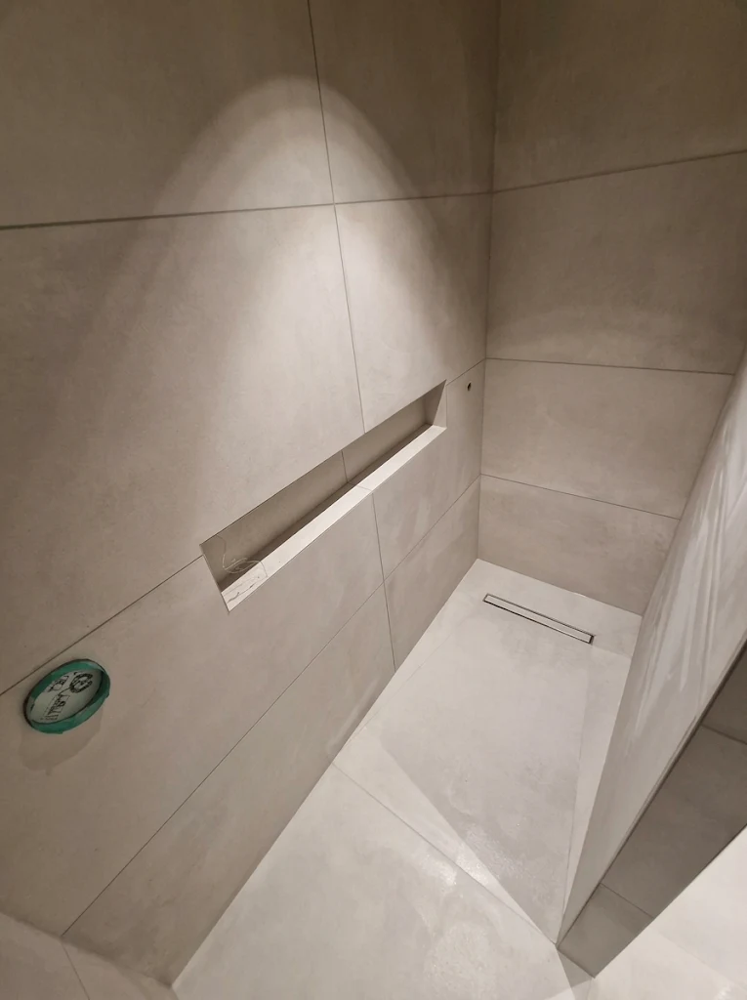
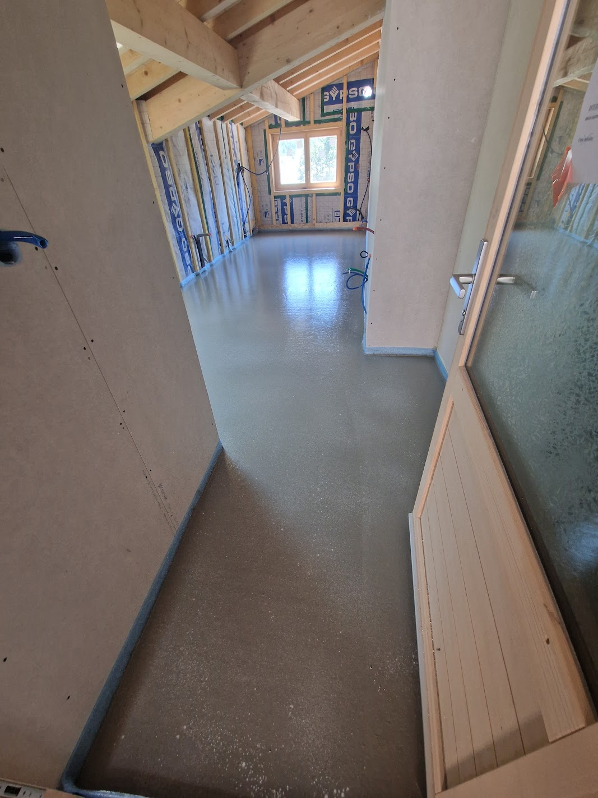

CHANTIERS RÉELS EN SAVOIE & HAUTE-SAVOIE
Nos Réalisations en Images
Chaque photo ci-dessous présente un chantier réellement exécuté par IBO CARRELAGE (finitions à 45°, douches caniveau, grands formats, chape liquide et terrasses).

Salle de Bain Prestige
Grand format effet pierre naturelle & niche intégrée

Haute Précision
Détail d'onglet poli à 45° sans baguette plastique

Douche à l'Italienne
Caniveau invisible, étanchéité SPEC & niche 45°

Sur-Mesure
Encadrement fenêtre 45° & banquette carrelée terrazzo

Habillage & Volume
Tablier de baignoire et niche en dalles grand format

Rénovation Complète
Dalles grand format effet marbre (réalisé en 3 jours)

Préparation des Sols
Coulage de chape liquide sur plancher chauffant

Planéité Parfaite
Chape liquide anhydrite prête à carreler

Extérieur & Terrasse